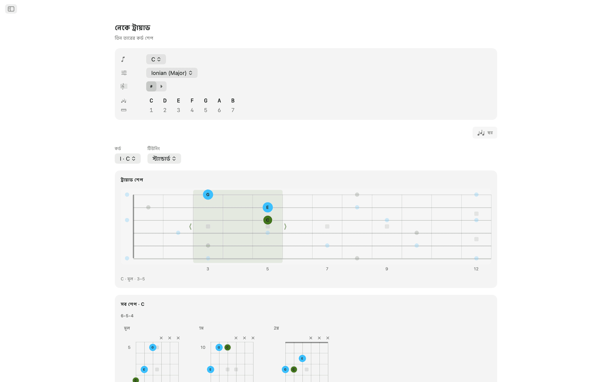
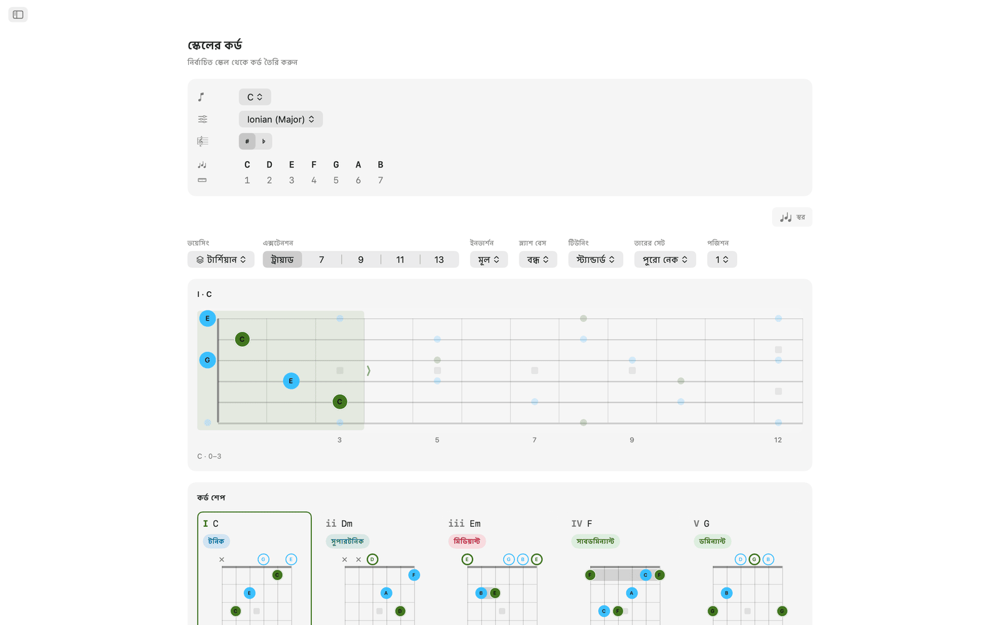
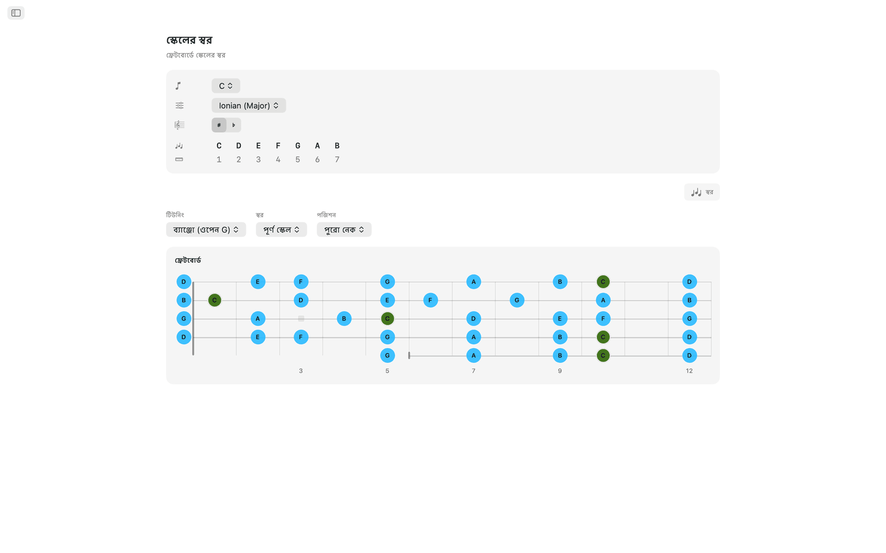
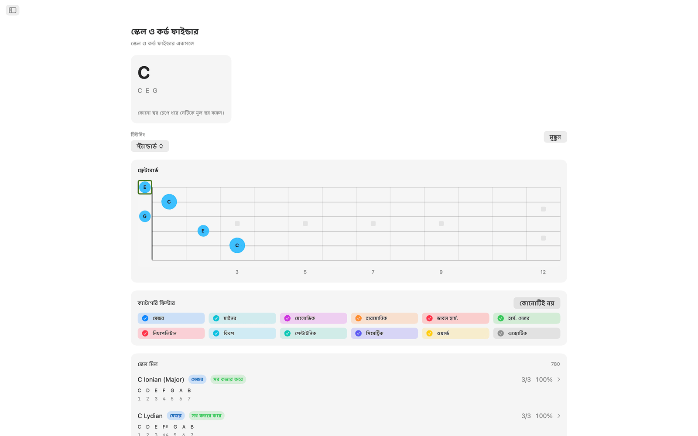
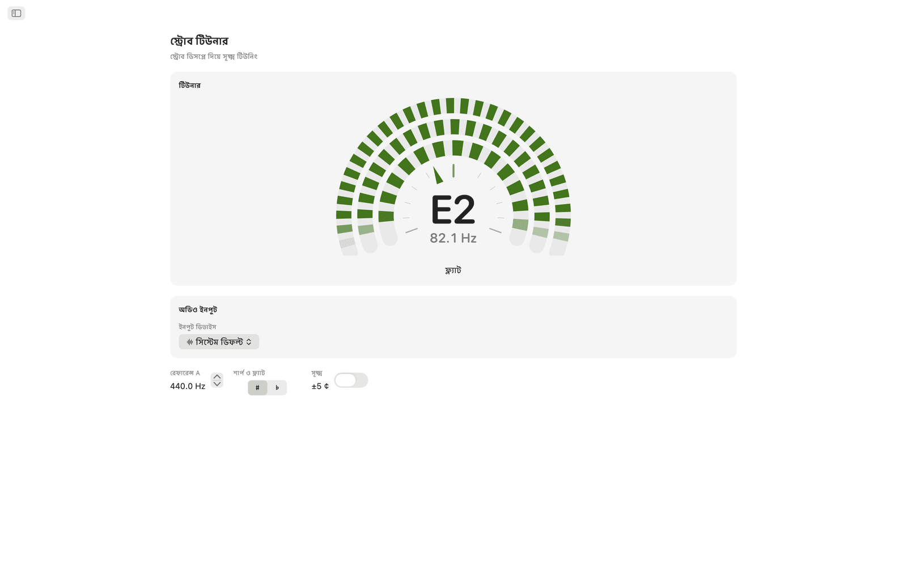
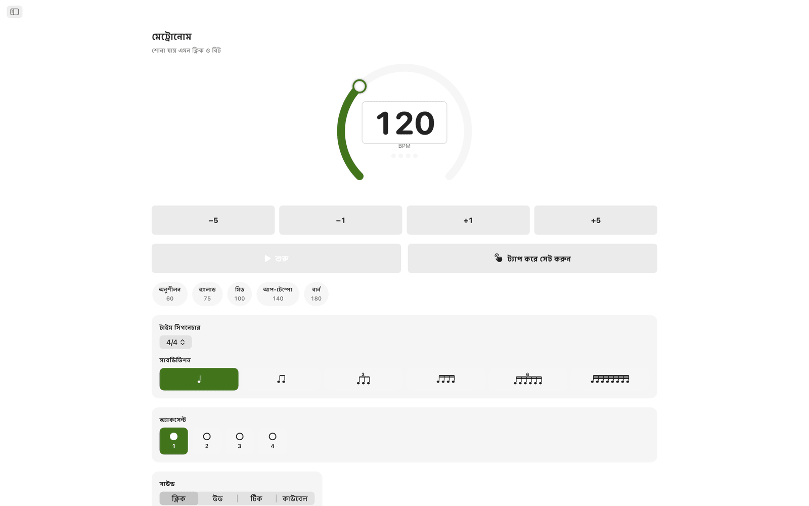
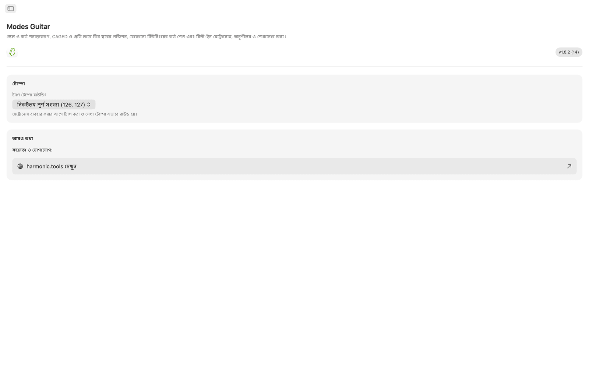

macOS-এর জন্য Modes Guitar
Modes Guitar ম্যাকের জন্য একটি ফ্রেটবোর্ড অ্যাপ। যে স্বরগুলো চেপে আছেন সেগুলোতে ক্লিক করে জানুন কী বাজাচ্ছেন, যেকোনো স্কেল CAGED বা প্রতি তারে তিন স্বরের পজিশনে সাজিয়ে দেখুন, যেকোনো টিউনিংয়ে বাজানোর উপযোগী কর্ড শেপ খুঁজুন, আর বিল্ট-ইন মেট্রোনোমের সঙ্গে অনুশীলন করুন। এটি সাইডবারের অ্যাপ, তাই আপনার DAW বা পাঠ-পরিকল্পনার পাশে থাকতে পারে।
- নেকের ওপরেই সরাসরি স্কেল ও কর্ড ফাইন্ডার
- CAGED ও প্রতি তারে তিন স্বরের পজিশন
- যেকোনো টিউনিংয়ে বাজানোর উপযোগী কর্ড শেপ
- 20টি টিউনিং, সঙ্গে আপনার নিজের কাস্টম টিউনিং
- অডিও ইন্টারফেস ও চ্যানেল বাছাইসহ স্ট্রোব টিউনার
- প্র্যাকটিস মেট্রোনোম ও বিজ্ঞপ্তি কেন্দ্রের উইজেট
স্ক্রিনশট
লাইট ও ডার্ক স্ক্রিনশট আছে, যা ওয়েবসাইটের থিম অনুসরণ করে।









ফিচার
- যে স্বরগুলো চেপে ধরে আছেন, নেকের ওপরেই সরাসরি ক্লিক করুন। Modes Guitar রিয়েল টাইমে কর্ডের নাম বলে (মেজর, মাইনর, ডিমিনিশড, অগমেন্টেড, এক্সটেন্ডেড, সাসপেন্ডেড ও আরও) এবং মিলে যাওয়া প্রতিটি স্কেল স্বরের মিল অনুযায়ী সাজায়। স্কেলের পরিবার দিয়ে ফিল্টার করে তালিকা ছোট করুন, তারপর সরাসরি সেই স্কেলের কর্ডে চলে যান।
- মূল স্বর ও স্কেল বেছে নিন, আর নেক জুড়ে স্কেলের প্রতিটি স্বর জ্বলে উঠতে দেখুন। CAGED পজিশন বা প্রতি তারে তিন স্বরের রানে বদলান, পজিশন পাল্টাতে নেকের ওপর-নিচে একটি বক্স টেনে নিন, আর স্বরগুলো ট্রায়াড, সেভেন্থ, পেন্টাটনিক বা পূর্ণ স্কেলে সীমিত করুন।
- স্কেলের প্রতিটি ডিগ্রি বাজানোর উপযোগী আসল গ্রিপ পায়, সঙ্গে খোলা ও মিউট করা তারের চিহ্ন, বারে নির্দেশক এবং শেপ নেকের ওপরের দিকে থাকলে ফ্রেট নম্বরের কলাম। নেক বরাবর পজিশনগুলো একে একে দেখুন, ইনভার্শন বেছে নিন, বা স্ল্যাশ কর্ডের জন্য স্কেলের যেকোনো স্বরকে বেসে বসান।
- কী-র যেকোনো কর্ড খুলে নিয়ে আবার নেকে বসান। প্রতিটি ক্লোজ ভয়েসিং তারের সেট অনুযায়ী ডায়াগ্রামের গ্রিডে সাজানো থাকে, মূল অবস্থান, প্রথম ইনভার্শন ও দ্বিতীয় ইনভার্শনে। একটি বেছে নিলে সেটি ফ্রেটবোর্ডে কর্ডের বাকি স্বরগুলোর সঙ্গে দেখা যায়, আর একই গ্রিপ সব পজিশনে বাজাতে শেপটি নেকের ওপরে টেনে নেওয়া যায়।
- টিউনিং 20টি: স্ট্যান্ডার্ড, ড্রপ D, ড্রপ C, E♭ স্ট্যান্ডার্ড, DADGAD, ওপেন G, ওপেন D, সাত তারের, ব্যারিটোন, চার ও পাঁচ তারের বেস, ইউকুলেলি, ব্যাঞ্জো (পাঁচ তারের, টেনর ও প্লেকট্রাম) এবং ম্যান্ডোলিন। আপনার বেছে নেওয়া টিউনিং অনুযায়ী শেপ, গ্রিপ ও স্বরের নাম নতুন করে হিসাব হয়, আর টিউনিং বদলালে আঙুলের বিন্যাস একই থাকে, ফলে একই শেপ কেমন শোনায় তা শোনা যায়। কাস্টম টিউনিংয়ের জন্য 3 থেকে 8টি তার বেছে নিন এবং যেকোনো প্রিসেট থেকে শুরু করে প্রতিটি তার কান দিয়ে টিউন করুন।
- স্ট্রোব টিউনারটি স্ট্রোবোস্কোপিক। একটি তার বাজান: সুর ফ্ল্যাট হলে তিনটি সেগমেন্ট-বলয় একদিকে সরে, শার্প হলে অন্যদিকে, আর ঠিক সুরে পৌঁছালেই থেমে যায়। কাঁটার চেয়ে এটি অনেক সূক্ষ্ম পার্থক্য দেখায়। এটি পুরোপুরি ক্রোমাটিক: খোলা তার হোক বা চেপে বাজানো স্বর, যেকোনো টিউনিংয়ে আপনি যা-ই বাজান তার নাম বলে দেয়, আর গিটার, বেস, ইউকুলেলি, ব্যাঞ্জো বা ম্যান্ডোলিন একই ডায়াল থেকে টিউন হয়। রেফারেন্স A 415 থেকে 466 Hz-এর মধ্যে যেকোনো মানে সেট করা যায়, Fine স্কেল চালু করে এক সেন্টের দশ ভাগের এক ভাগ পর্যন্ত পড়া যায়, আর অ্যাক্সিডেন্টাল শার্প বা ফ্ল্যাট হিসেবে দেখানো যায়। ম্যাকে কোন অডিও ইন্টারফেস ও কোন ইনপুট চ্যানেল শুনবে তাও বেছে নেওয়া যায়, ফলে ইন্টারফেসে প্লাগ করা গিটার সরাসরি জ্যাক থেকেই টিউন হয়। সবকিছু ডিভাইসেই বিশ্লেষণ হয়, কিছুই রেকর্ড করা হয় না।
- প্র্যাকটিস মেট্রোনোমে আছে টাইম সিগনেচার, সাবডিভিশন, সুইং, প্রতি বিটের অ্যাকসেন্ট, চারটি ক্লিক ভয়েস, পরিবর্তনযোগ্য ভলিউম ও হ্যাপটিক্স, আর যে অংশটি অনুশীলন করছেন তার জন্য দ্রুত টেম্পো ও সেভ করা প্রিসেট।
- মেট্রোনোম বিজ্ঞপ্তি কেন্দ্রে রাখুন এবং অ্যাপ বদলানো ছাড়াই চালু বা বন্ধ করুন। অনুশীলনের জন্য আছে আজকের স্কেল ও আজকের কর্ডও।
ম্যাকে
- পুরোপুরি ডিভাইসেই চলে: অ্যাকাউন্ট, বিজ্ঞাপন বা ট্র্যাকিং নেই
- ইন্টারনেট সংযোগ লাগে না
- পুরো অ্যাপে লাইট ও ডার্ক অ্যাপিয়ারেন্স
- সাইডবারের অ্যাপ, যা আপনার DAW বা পাঠ-পরিকল্পনার পাশে থাকে
- 22টি ভাষায় স্থানীয়করণ করা
অ্যাক্সেসিবিলিটি
VoiceOver ও ভয়েস কন্ট্রোলের সঙ্গে কাজ করে, আর অ্যারো কী ও স্পেস দিয়ে কীবোর্ড থেকেও চালানো যায়।
Modes Guitar 7 দিন বিনামূল্যে ব্যবহার করে দেখা যায়। ট্রায়ালের পর পূর্ণ অ্যাক্সেস এককালীন কেনা, কোনো সাবস্ক্রিপশন নেই।
ফ্রেটবোর্ড ও টিউনিংয়ের রেফারেন্স
অ্যাপে থাকা টিউনিং, পজিশন, কর্ডের টুল, টিউনার ও মেট্রোনোমের ফিচারের রেফারেন্স।
টিউনিং
আপনার বেছে নেওয়া টিউনিং অনুযায়ী শেপ, গ্রিপ ও স্বরের নাম নতুন করে হিসাব হয়। টিউনিং বদলালে আঙুলের বিন্যাস একই থাকে, ফলে একই শেপ কেমন শোনায় তা শোনা যায়। স্বরগুলো নিচু তার থেকে উঁচু তারের ক্রমে সাজানো।
| টিউনিং | স্বর (নিচু → উঁচু) | তার |
|---|---|---|
| Standard | E A D G B E | 6 |
| Drop D | D A D G B E | 6 |
| Drop C | C G C F A D | 6 |
| E♭ Standard | E♭ A♭ D♭ G♭ B♭ E♭ | 6 |
| DADGAD | D A D G A D | 6 |
| Open G | D G D G B D | 6 |
| Open D | D A D F♯ A D | 6 |
| Seven-String | B E A D G B E | 7 |
| Baritone | B E A D F♯ B | 6 |
| Bass (4-String) | E A D G | 4 |
| Bass (5-String) | B E A D G | 5 |
| Ukulele | G C E A | 4 |
| Banjo (Open G) | G D G B D | 5 |
| Banjo (Double C) | G C G C D | 5 |
| Banjo (Sawmill) | G D G C D | 5 |
| Banjo (Open D) | F♯ D F♯ A D | 5 |
| Banjo (Tenor) | C G D A | 4 |
| Banjo (Irish Tenor) | G D A E | 4 |
| Banjo (Plectrum) | C G B D | 4 |
| Mandolin | G D A E | 4 |
নিজের টিউনিংও বানাতে পারেন: 3 থেকে 8টি তার বেছে নিন এবং যেকোনো প্রিসেট থেকে শুরু করে প্রতিটি তার কান দিয়ে টিউন করুন।
ফ্রেটবোর্ডে পজিশন
যেকোনো স্কেল নেক জুড়ে সাজিয়ে দেখুন এবং তার কতটা অংশ দেখবেন তা বদলান। পজিশন সরাতে নেকের ওপর-নিচে একটি বক্স টেনে নিন।
পজিশন পদ্ধতি
স্বরের উপসেট
কর্ড শেপ
স্কেলের প্রতিটি ডিগ্রি বর্তমান টিউনিংয়ে বাজানোর উপযোগী গ্রিপ পায়।
- বাজানোর উপযোগী গ্রিপে থাকে খোলা ও মিউট করা তারের চিহ্ন, বারে নির্দেশক এবং শেপ নেকের ওপরের দিকে থাকলে ফ্রেট নম্বরের কলাম।
- নেক বরাবর শেপগুলো একে একে দেখা যায়।
- ইনভার্শনে বেছে নেওয়া যায় কর্ডের কোন স্বর বেসে থাকবে।
- স্ল্যাশ কর্ডের জন্য স্কেলের যেকোনো স্বরকে বেসে বসানো যায়।
নেকে ট্রায়াড
কী-র যেকোনো কর্ড খুলে নিয়ে আবার নেকে বসান।
স্ট্রোব টিউনার
যেকোনো টিউনিংয়ে যেকোনো বাদ্যযন্ত্রের জন্য একটি স্ট্রোবোস্কোপিক টিউনার। ডিভাইসেই বিশ্লেষণ হয়, কখনো রেকর্ড করা হয় না।
প্র্যাকটিস মেট্রোনোম
যে অংশগুলো অনুশীলন করছেন তার জন্য একটি পূর্ণাঙ্গ মেট্রোনোম।
উইজেট
অ্যাপ বদলানো ছাড়াই মেট্রোনোম, আজকের স্কেল ও আজকের কর্ডে পৌঁছান।